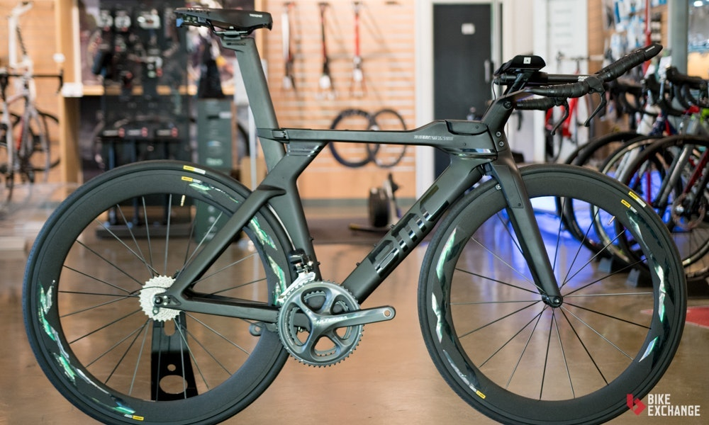

Bicicletas Contrareloj

Las bicicletas de Triatlón/contrarreloj están diseñadas con las competencias más exigentes en mente, no te servirán mucho para motivos recreacionales. Se enfocan en la aerodinámica, lo cual las hace más rápidas que las bicicletas de ruta, si compites en línea recta, buscando batir un tiempo récord. Estas ventajas en la velocidad se ven balanceadas sacrificando tu control y comodidad después usos prolongados. Están hechas para pistas cerradas, preferiblemente deberías usarlas por tu cuenta o con grupos muy pequeños, ya que el manubrio es estrecho, y no se presta para mucho control ni facilidad al frenar, la mayoría de los ciclistas de triatlón, también tienen una bicicleta de ruta para complementar la experiencia en ambientes más sociales.
Cuadro
El cuadro será el “cuerpo” de tu primer bicicleta de triatlón, o el esqueleto de la misma. Lo que debemos saber a la hora de comprarnos nuestra primera bicicleta, es que el cuadro puede ser de diferentes materiales como: el aluminio, la fibra de carbono o incluso, el titanio. La diferencia de cada uno de los materiales dependerá: del peso, la rigidez, la absorción de las irregularidades del terreno y la geometría y comodidad del mismo, dentro de otros muchos factores.
Manubrio/manillar
Podríamos decir que el manillar de triatlón ha supuesto el mayor avance dentro de las bicicletas de triatlón. En 1986 Charley French y Boone Lennon lanzaron el manillar aerodinámico “Scott DH” (Figura 1), un manillar de que se prolongaba doblando sus barras de aluminio, y que permitía al triatleta agarrar delante las extensiones y asumir una postura aerodinámica.
Ruedas
Al momento de comprar ruedas, hay que entender bien cuáles son las distintas características de unas cada modelo y sus consecuencias sobre el comportamiento de la bici. A continuación un listado de las características relevantes para la elección de un par de ruedas: -El peso. El peso de un par de ruedas puede variar de 1.000 a 2.000 gramos. Esta diferencia se siente mucho en dos situaciones distintas de carreras: cambios bruscos de ritmo o escalar. A menor peso las aceleraciones y las subidas se hacen más fáciles. -Clincher vs tubulares. Escribiré otro artículo sobre esto, pero por ahora lo dejaremos en que el tubular es más liviano, mientras que el neumático es de mucho más fácil uso y mantención.
Velocidades
El Ironman es un tipo particular de triatlón, una competencia de resistencia que incluye natación, ciclismo y maratón. En una competencia Ironman, los participantes deben nadar una distancia de 2,4 millas (3,86 km), hacer un recorrido en bicicleta de 112 millas (180 km) y correr 26,2 millas (42,2 km), todo en 17 horas. El recorrido varía de carrera a carrera, y los participante pueden enfrentar cuestas empinadas, rápidos descensos y curvas cerradas. Tienes que completar la fase de ciclismo lo bastante rápido para no quedar atrás dento de tu categoría de edad pero sin agotar las energías necesarias para completar la fase de maratón.